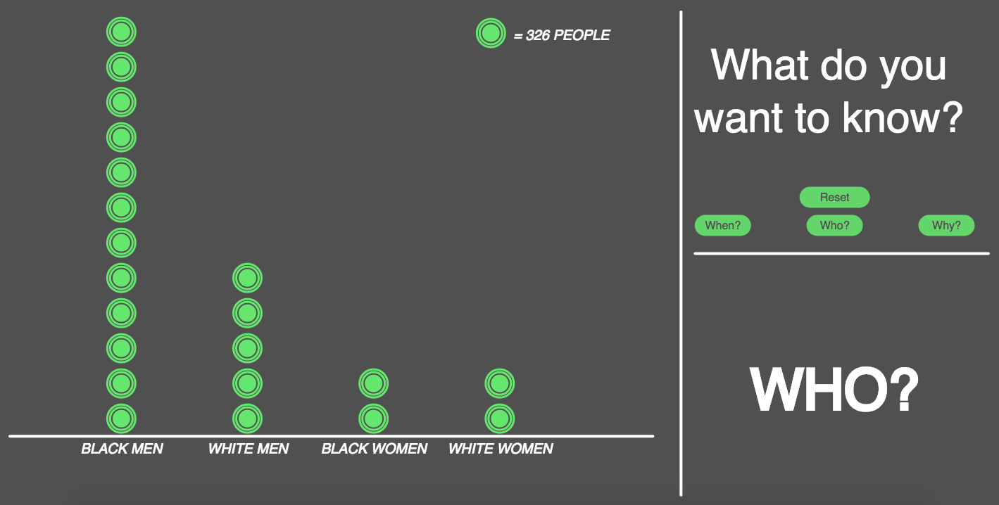
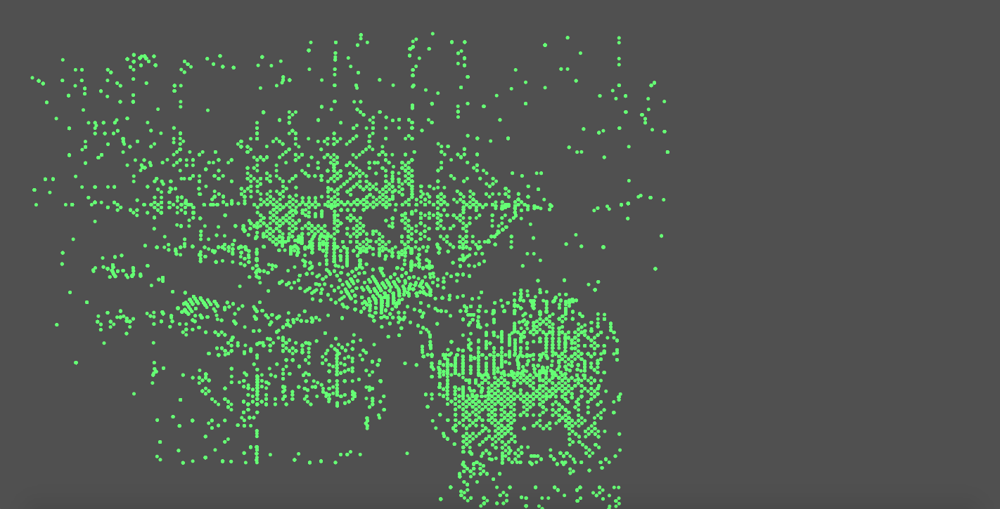
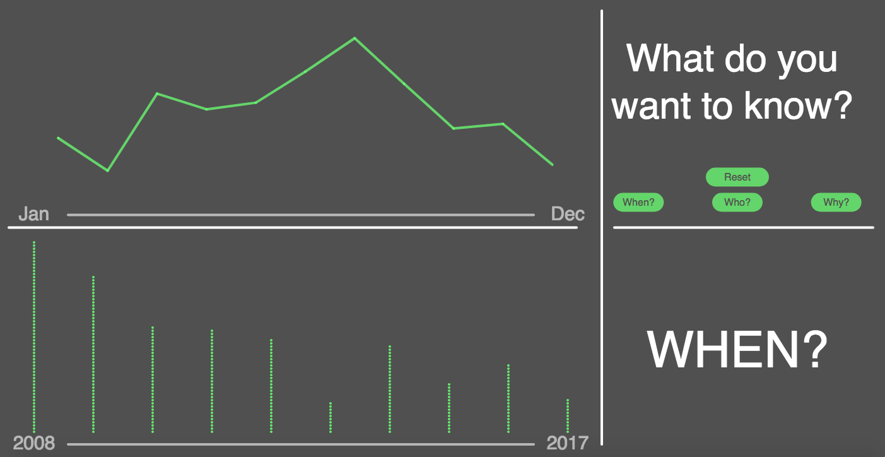

I wanted this visualization to be a learning experience for the audience, and for it to be a way to learn more about police brutality in Minneapolis for the visual learner. The dataset contains over 24,000 instances of when a police officer used some sort of physical force from the past 10 years. Each entry has specific information about the location, purpose, type of force, and time of each instance. The dataset is clearly very rich in content, but I wanted to approach the dataset from the perspective of someone who is looking to learn more about actual data about police brutality. For context, before Philando Castile was pulled over and shot in 2016, there were several narratives about race in Minneapolis. For someone from anywhere but the Midwest, Minneapolis is considered to be a relatively white city in a mostly white state. However, people that live in Minneapolis know that not only is Minneapolis as white as people assume, it also has a big problem with racism and police brutality. Philando Castile's murder cast Minneapolis in the national spotlight and forced them to examine the racism prevalent in the greater Minneapolis area. However, it also caused a lot of skepticism about racism in Minneapolis, especially amongst white Minnesotans who were convinced that racism was a problem for other cities, not our own.
This is the reason I chose this dataset, and the reason that I chose to present it as simply as I did: these data speak for themselves. It is undeniable that black men are the primary group of people being targeted by police, and it is undeniable that they are being targeted because they are “suspicious” for being nonwhite. There was not much of a trend over time, except that the use of force has decreased since 2008, and that there are clearly more instances of force in the summer months, likely because more people are outside in warmer weather.
The biggest challenge I faced was how to go about addressing a topic that is not simple and a dataset that is not simple in a simple way, that is understandable for someone who has no desire to look at the CSV containing the data. In terms of coding, my own stubbornness caused me a lot of trouble. I was determined to use p5 for as much of this project as possible, but some things (like mapping and data wrangling) were much easier to do in other programs. For mapping, I decided that a spatial visualization was not necessary for this dataset, because instances of force being used were quite ubiquitous. For data wrangling, I eventually compromised and used several tables that were cleaned to accommodate different states, instead of working off of one data table for all of them, which was my original intention.
The biggest design challenge was with how to represent instances of force over time. My initial visualization was not clear enough, but I wanted to somehow include month and year. Instead, I eventually created a very simple visualization of year and month on separate axes. I think it was useful to show both because I wanted to see not only the change over time, but also the pattern of seasonality. If I had more time, I would definitely spend more time on this visualization, likely making animated, similar to the visualization seen in class of gun deaths in the United States.
